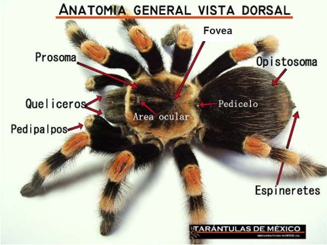

    <!-- ======= Services Section ======= -->
    <section id="services" class="services section-bg">
        <div class="container">
  
          <div class="section-title" data-aos="fade-up">
            <h2>Tarántulas</h2>
            <p>Las tarántulas pertenecen a la clase arachnida, grupo que se incluye en el filum de los artrópodos junto con los insectos, crustáceos y miriápodos. Éste filum es el grupo animal con mayor número de especies en el planeta y sus miembros comparten las características de tener un esqueleto externo (exoesqueleto) conformado principalmente por quitina y por tener patas articuladas (de ahí viene el nombre artrópodos).

                Las tarántulas pertenecen al orden araneae, suborden Mygalomorphae, familia Theraphosidae, que cuenta con varias subfamilias siempre en discusión.</p>
          </div>
  
          <div class="row">
            <div class="col-md-6 col-lg-3 d-flex align-items-stretch mb-5 mb-lg-0" data-aos="fade-up">
              <div class="icon-box icon-box-pink">
                <div class="icon"></div>
                <h4 class="title"><a href="">Ciclo biológico</a></h4>
                <p class="description">texto</p>
              </div>
            </div>
  
            <div class="col-md-6 col-lg-3 d-flex align-items-stretch mb-5 mb-lg-0" data-aos="fade-up" data-aos-delay="100">
              <div class="icon-box icon-box-cyan">
                <div class="icon"></div>
                <h4 class="title"><a href="">Conservación</a></h4>
                <p class="description">texto</p>
              </div>
            </div>
  
            <div class="col-md-6 col-lg-3 d-flex align-items-stretch mb-5 mb-lg-0" data-aos="fade-up" data-aos-delay="200">
              <div class="icon-box icon-box-green">
                <div class="icon"></div>
                <h4 class="title"><a href="">Muda</a></h4>
                <p class="description">texto</p>
              </div>
            </div>
  
            <div class="col-md-6 col-lg-3 d-flex align-items-stretch mb-5 mb-lg-0" data-aos="fade-up" data-aos-delay="300">
              <div class="icon-box icon-box-blue">
                <div class="icon"></div>
                <h4 class="title"><a href="">Anatomia</a></h4>
                
              </div>
            </div>
  
          </div>
  
        </div>
      </section><!-- End Services Section -->
